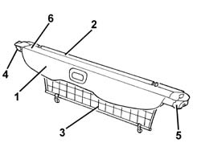
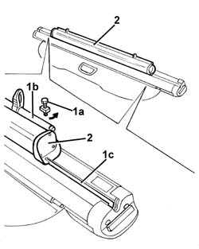
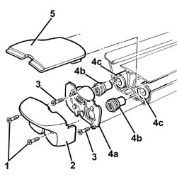
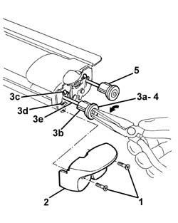
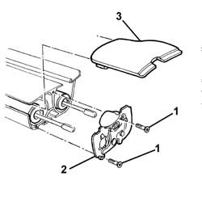
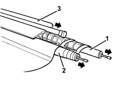
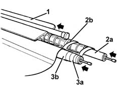
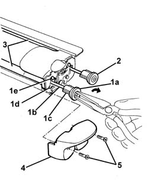
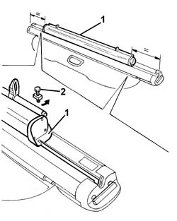

7040B29 Load carrying compartment COMBINED COVERING BLIND and PET PROTECTION - Dismantling and reassembly at the bench
- Path
- Procedures > 70 FITTINGS > 7040 BODYSHELL INTERIOR TRIMS AND FITTINGS > 7040B luggage compartment and load platform trims > 7040B29 Load carrying compartment COMBINED COVERING BLIND and PET PROTECTION - Dismantling and reassembly at the bench
- Kind
- repair procedure (removal / refitting; the operation number is the code)
- Applies to
- all engines; all production periods
- Interactive page
- https://sloeber94.github.io/elrnDB-a156/en/#/3238815
Applies to: all engines; all production periods; only with equipment: Station Wagon
 Dismantling
Dismantling
 Reassembling
ReassemblingThe blind assembly which covers the load carrying compartment and pet grille, consists of the following components:
1. (Roller) blind for covering the load carrying compartment.
2. Upper pet (roller) grille.
3. Lower petrol (roller) grille (which can be removed individually).
4. Left lock (which can be removed without releasing the blind and grille springs).
5. Right lock (which can only be removed after releasing the blind and grille springs).
6. Frame.

Applies to: all engines; all production periods; only with equipment: Station Wagon
1. Loosen the bolts (1a) fixing the lower grille unit (1b) and remove them with the plates after having released them from the retaining splining (1c).
2. Remove the lower grille unit.

Applies to: all engines; all production periods; only with equipment: Station Wagon
1. Working on the left side of the unit, undo the bolts.
2. Remove the lid.
3. Unscrew the bolts
4. Remove the left lock (4a), releasing the centering bushes (4b) from the rods (4c).
5. Remove the moulding.

Applies to: all engines; all production periods; only with equipment: Station Wagon
1. Working on the right side of the unit, undo the bolts.
2. Remove the lid.
3. Insert pliers in one of the two retaining bushes (3a) and release the retainers (3b) from the recesses (3c), then extract it gently via the openings (3d) without disconnecting it from the rod (3e). Follow the (anti-clockwise) rotation of the bush (3a) to unroll the internal pre-loading spring.
4. Recover the bush.
5. Repeat the previous steps from 1. to 4. for the other bush.

Applies to: all engines; all production periods; only with equipment: Station Wagon
1. Unscrew the bolts
2. Remove the right lock.
3. Remove the moulding.

Applies to: all engines; all production periods; only with equipment: Station Wagon
1. Remove the pet grille and reel.
2. Remove the load carrying compartment covering blind and reel.
3. If necessary, remove the trim.

Applies to: all engines; all production periods; only with equipment: Station Wagon
Reassembling
DismantlingCheck that the components are not damaged.
1. If removed, place the trim in its housing.
2. Fit the load carrying compartment covering blind and reel (2a) in its housing. Position the roller side (2b) as illustrated.
3. Fit the pet grille and reel (3a) in its housing. Position the roller side (3b) as illustrated.

Applies to: all engines; all production periods; only with equipment: Station Wagon
Fit the moulding.
Position the right lock and fix it using the bolts.
1. Working on the right side of the unit, insert pliers in one of the two retaining bushes (1a); engage them on the rod (1b), then rotate them (in a clockwise direction) to pre-load the inner spring, then insert the bush retainers (1c) via the openings (1d) and engage them in the recesses (1e).
2. Repeat step 1. for the other bush.
3. Check that the spring pre-loading is correct; if not, repeat the previous steps 1. and 2.
4. Position the cover.
5. Tighten the screws.

Applies to: all engines; all production periods; only with equipment: Station Wagon
Working on the left side of the unit, position the moulding.
Position the left lock fitting the centering bushes on the rods.
Tighten the screws.
Position the cover and fix it using the bolts.
1. Position the lower grille unit, centering it in relation to the two ends of the blind assembly.
2. Fit the bolts and plates in the splining and tighten them.
